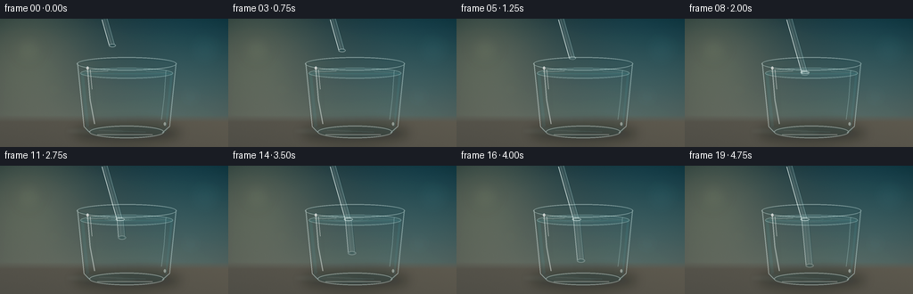
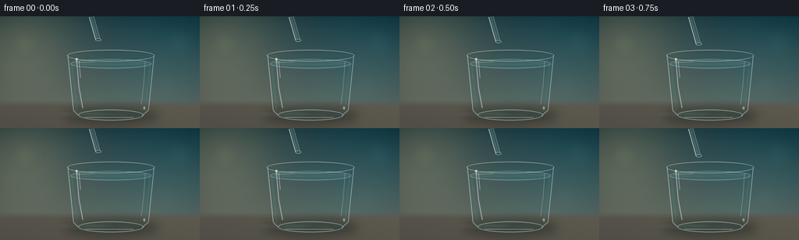
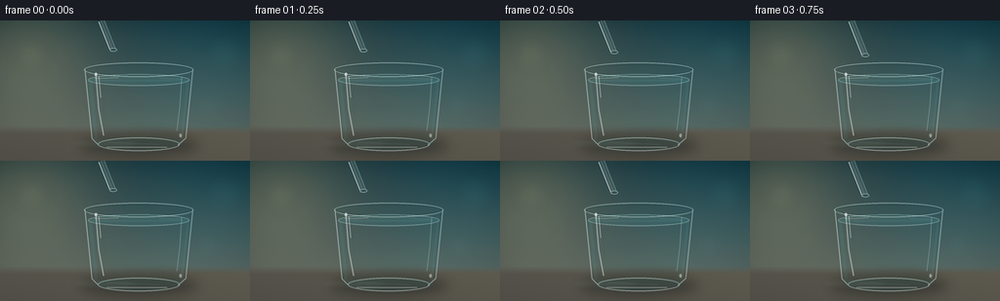
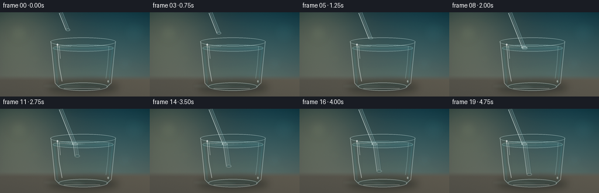

CODING AGENTS AS PIXEL WORLD MODELS
traex/GPT-5.6-Sol · phygen_071
点击播放 · 原生 RGB 像素
逐轮保存的候选
回放视频、检查图与代码变化。
每份候选均可单独播放。实际图片检查记录在下方工具轨迹中。
候选 01播放与检查图
点击播放 · 原生 RGB 像素


展开代码变化
--- 上一保存版本
+++ 本次保存版本
@@ -0,0 +1,251 @@
+from pathlib import Path
+import math
+import numpy as np
+from PIL import Image, ImageDraw, ImageFilter
+import artifact_io
+
+# Deterministic procedural rendering. All geometry is drawn at 4x resolution,
+# then reduced for smooth photographic-looking edges.
+W, H, N = 256, 144, 20
+S = 4
+WW, HH = W*S, H*S
+rng = np.random.default_rng(71071)
+
+def sc(v): return int(round(v*S))
+def pts(seq): return [(sc(x), sc(y)) for x, y in seq]
+
+def rgba_layer():
+ return Image.new('RGBA', (WW, HH), (0,0,0,0))
+
+def composite(img, layer):
+ return Image.alpha_composite(img, layer)
+
+def ellipse(draw, box, **kw):
+ draw.ellipse(tuple(sc(v) for v in box), **kw)
+
+def line(draw, xy, **kw):
+ if 'width' in kw: kw['width'] = max(1, sc(kw['width']))
+ draw.line(pts(xy), **kw)
+
+def polygon(draw, xy, **kw):
+ draw.polygon(pts(xy), **kw)
+
+def smoothstep(a,b,x):
+ q=np.clip((x-a)/(b-a),0,1); return q*q*(3-2*q)
+
+def base_scene():
+ yy, xx = np.mgrid[0:HH, 0:WW]
+ x = xx/S; y = yy/S
+ # Calm, softly lit studio background, cyan on right and warm daylight at left.
+ top = np.array([31., 54., 60.]); bot = np.array([108., 111., 101.])
+ t = np.clip(y/145,0,1)[...,None]
+ a = top*(1-t) + bot*t
+ warm = np.exp(-((x-24)**2/(2*55**2)+(y-25)**2/(2*54**2)))[...,None]
+ cool = np.exp(-((x-225)**2/(2*76**2)+(y-40)**2/(2*70**2)))[...,None]
+ a += warm*np.array([42,34,20]) + cool*np.array([-4,14,18])
+ # vignette
+ rr=((x-128)/165)**2+((y-70)/112)**2
+ a -= (np.clip(rr-.24,0,1)[...,None])*np.array([14,14,13])
+ # tabletop begins at 111, softly blended
+ table = np.array([91.,88.,78.])[None,None,:] + (x[...,None]-128)*np.array([.035,.028,.018])
+ table -= np.clip((y-111)[...,None],0,33)*np.array([.16,.14,.10])
+ blend=np.clip((y-108)/8,0,1)[...,None]
+ a=a*(1-blend)+table*blend
+ # subtle, fixed sensor grain
+ grain = rng.normal(0, 0.7, (HH,WW,1))
+ a += grain
+ return Image.fromarray(np.uint8(np.clip(a,0,255)), 'RGB').convert('RGBA')
+
+BASE = base_scene()
+
+# Static defocused background light circles.
+def add_bokeh(img):
+ l=rgba_layer(); d=ImageDraw.Draw(l)
+ for box, fill in [((15,17,49,51),(242,224,173,13)), ((210,15,250,55),(97,203,215,10)),
+ ((49,68,72,91),(246,232,198,7)), ((199,72,229,102),(158,230,229,7))]:
+ ellipse(d,box,fill=fill)
+ l=l.filter(ImageFilter.GaussianBlur(sc(8)))
+ return composite(img,l)
+
+def draw_table_and_shadow(img, phase):
+ # vessel shadow and soft colored caustic under the glass
+ sh=rgba_layer(); d=ImageDraw.Draw(sh)
+ ellipse(d,(82,117,203,139),fill=(8,20,22,82))
+ ellipse(d,(97,122,191,135),fill=(5,17,19,76))
+ sh=sh.filter(ImageFilter.GaussianBlur(sc(6)))
+ img=composite(img,sh)
+ ca=rgba_layer(); d=ImageDraw.Draw(ca)
+ ellipse(d,(111,125,193,134),outline=(159,235,232,35),width=sc(1.2))
+ ellipse(d,(72,121,141,131),fill=(199,238,218,13))
+ ca=ca.filter(ImageFilter.GaussianBlur(sc(2.2)))
+ return composite(img,ca)
+
+def distort_glass_background(img):
+ """Subtle cylindrical lens refraction inside the tumbler."""
+ arr=np.asarray(img.convert('RGB'))
+ yy,xx=np.mgrid[0:HH,0:WW]
+ xf=xx/S; yf=yy/S
+ # vessel body with softly curved lower boundary
+ half = 52 - (yf-47)*0.11
+ inside=(yf>=46)&(yf<=128)&(np.abs(xf-142)<=half)
+ # sample slightly toward center: objects appear laterally compressed through glass
+ sx=(142+(xf-142)*0.965)*S
+ sy=(yf + .35*np.sin((xf-142)/15))*S
+ sx=np.clip(sx.astype(int),0,WW-1); sy=np.clip(sy.astype(int),0,HH-1)
+ warped=arr[sy,sx].copy()
+ # very gentle glass transmission tint
+ warped=np.clip(warped.astype(float)*np.array([.99,1.018,1.02]),0,255).astype(np.uint8)
+ out=arr.copy(); out[inside]=warped[inside]
+ return Image.fromarray(out,'RGB').convert('RGBA')
+
+def draw_water(img, contact, ripple_phase):
+ # Crystal clear body of water, not opaque blue: a low-alpha tint and darker deep edge.
+ l=rgba_layer(); d=ImageDraw.Draw(l)
+ polygon(d,[(90,61),(194,61),(187,123),(180,128),(104,128),(96,123)],fill=(62,169,178,27))
+ ellipse(d,(96,115,188,133),fill=(54,150,160,15))
+ # very faint depth gradient bands
+ for y in range(64,124,4):
+ alpha=int(2+5*(y-64)/60)
+ line(d,[(94+(y-61)*.10,y),(191-(y-61)*.10,y)],fill=(42,146,158,alpha),width=4)
+ img=composite(img,l)
+ # water surface seen through the elliptical opening
+ surf=rgba_layer(); ds=ImageDraw.Draw(surf)
+ ellipse(ds,(90,55,194,67),fill=(121,212,214,23),outline=(210,249,245,105),width=sc(.7))
+ ellipse(ds,(93,57,191,64.5),outline=(47,111,120,62),width=sc(.65))
+ # left and right surface glints
+ line(ds,[(97,59.4),(121,58.4)],fill=(248,255,248,113),width=.65)
+ line(ds,[(164,59.0),(186,60.0)],fill=(226,255,252,77),width=.55)
+ return composite(img,surf)
+
+def straw_axis(t):
+ # tip follows the physical straw axis slowly downward. Ease avoids robotic motion.
+ e=smoothstep(0,1,t)
+ tip_y=30.0+82.0*e
+ tip_x=126.0+0.286*(tip_y-30.0)
+ return tip_x,tip_y
+
+def segment_polygon(p0,p1,width):
+ x0,y0=p0; x1,y1=p1
+ L=max(math.hypot(x1-x0,y1-y0),1e-6); nx=-(y1-y0)/L*width/2; ny=(x1-x0)/L*width/2
+ return [(x0+nx,y0+ny),(x1+nx,y1+ny),(x1-nx,y1-ny),(x0-nx,y0-ny)]
+
+def draw_clear_tube(img,p0,p1,width,under=False,tip=True):
+ # A transparent polymer tube: only slight body tint, paired edge highlights,
+ # a refracted interior glint, and an open/rounded end.
+ x0,y0=p0; x1,y1=p1
+ L=max(math.hypot(x1-x0,y1-y0),.001)
+ nx=-(y1-y0)/L; ny=(x1-x0)/L
+ layer=rgba_layer(); d=ImageDraw.Draw(layer)
+ poly=segment_polygon(p0,p1,width)
+ polygon(d,poly,fill=(201,244,245,20 if under else 25))
+ # dim shadow edge on lower/right side
+ line(d,[(x0-nx*width*.47,y0-ny*width*.47),(x1-nx*width*.47,y1-ny*width*.47)],
+ fill=(17,61,69,58 if under else 66),width=.72)
+ # two characteristic plastic boundary reflections
+ line(d,[(x0+nx*width*.48,y0+ny*width*.48),(x1+nx*width*.48,y1+ny*width*.48)],
+ fill=(244,255,252,130 if under else 210),width=.78)
+ line(d,[(x0-nx*width*.34,y0-ny*width*.34),(x1-nx*width*.34,y1-ny*width*.34)],
+ fill=(209,249,248,69 if under else 116),width=.52)
+ # off-center specular filament, intermittently bright
+ line(d,[(x0+nx*width*.13,y0+ny*width*.13),(x1+nx*width*.13,y1+ny*width*.13)],
+ fill=(255,255,251,45 if under else 72),width=.38)
+ if tip:
+ r=width*.55
+ ellipse(d,(x1-r,y1-r*.45,x1+r,y1+r*.45),fill=(157,222,224,30),outline=(241,255,252,150 if not under else 95),width=sc(.55))
+ ellipse(d,(x1-r*.53,y1-r*.25,x1+r*.53,y1+r*.25),fill=(24,78,84,45 if under else 55))
+ return composite(img,layer)
+
+def draw_straw(img,t):
+ tipx,tipy=straw_axis(t)
+ # physical incident slope in air
+ slope=.286
+ top=(-0.0)
+ topx=tipx-slope*(tipy-top)
+ water_y=60.0
+ if tipy <= water_y:
+ img=draw_clear_tube(img,(topx,top),(tipx,tipy),7.0,False,True)
+ return img, None
+ # intersection along air path. Submerged apparent slope is reduced by refraction,
+ # creating the familiar broken/bent-straw illusion.
+ ix=tipx-slope*(tipy-water_y)
+ img=draw_clear_tube(img,(topx,top),(ix,water_y),7.0,False,False)
+ apparent_slope=.105
+ ap_tip=(ix+apparent_slope*(tipy-water_y),tipy)
+ # small optical discontinuity at the waterline, visible but physically plausible
+ p0=(ix+0.65,water_y+0.7)
+ img=draw_clear_tube(img,p0,ap_tip,8.3,True,True)
+ return img,(ix,water_y)
+
+def draw_ripples(img,contact,t):
+ if contact is None: return img
+ ix,iy=contact
+ # contact age; quiet ripple that expands across the surface then settles
+ tipy=straw_axis(t)[1]
+ age=np.clip((tipy-60)/52,0,1)
+ l=rgba_layer(); d=ImageDraw.Draw(l)
+ for j in range(3):
+ r=3+age*(18+9*j)
+ fade=int(70*(1-age*.65)*(1-j*.22))
+ # perspective squashes circles into ellipses at the water plane
+ ellipse(d,(ix-r,iy-r*.105,ix+r,iy+r*.105),outline=(224,255,251,fade),width=sc(.48))
+ # meniscus climbs around the plastic and slightly interrupts the straight waterline
+ ellipse(d,(ix-5.2,iy-1.45,ix+5.2,iy+1.7),outline=(244,255,252,145),width=sc(.7))
+ line(d,[(ix-3.5,iy-.15),(ix-2.6,iy-2.0)],fill=(239,255,253,115),width=.55)
+ return composite(img,l)
+
+def draw_glass(img,t):
+ # Rear and front rim arcs, sidewalls, and strong but narrow studio reflections.
+ l=rgba_layer(); d=ImageDraw.Draw(l)
+ # lip: back half is subdued, full double ellipse conveys thickness
+ ellipse(d,(86,43,198,58),outline=(226,249,246,103),width=sc(1.1))
+ ellipse(d,(88,45,196,56),outline=(28,66,72,80),width=sc(.65))
+ # side outlines taper to base
+ line(d,[(86.8,50),(94.0,121),(101,128)],fill=(231,251,248,116),width=1.05)
+ line(d,[(197.2,50),(190.0,121),(182,128)],fill=(224,250,247,103),width=1.0)
+ line(d,[(89.3,53),(96.5,120)],fill=(18,58,65,42),width=.62)
+ line(d,[(194.7,53),(187.5,120)],fill=(20,62,68,35),width=.62)
+ # base thickness and elliptical foot
+ ellipse(d,(100,120,184,134),outline=(225,250,246,110),width=sc(1.0))
+ ellipse(d,(103,122,181,131.5),outline=(33,83,88,55),width=sc(.75))
+ line(d,[(109,130),(171,130)],fill=(249,255,247,105),width=.72)
+ # tall window highlights, curved to follow vessel
+ line(d,[(98,55),(101,91),(106,118)],fill=(249,255,251,115),width=1.15)
+ line(d,[(101.0,57),(103,79)],fill=(255,255,252,178),width=.55)
+ line(d,[(186,58),(184,88),(181,113)],fill=(210,249,247,70),width=.85)
+ line(d,[(111,125),(163,127)],fill=(174,238,234,56),width=.55)
+ # a few small specular points
+ ellipse(d,(96.8,53.5,99.4,57.0),fill=(255,255,252,177))
+ ellipse(d,(183.5,116,186.0,120.0),fill=(241,255,250,105))
+ img=composite(img,l)
+ # soft front sheen along left wall
+ glow=rgba_layer(); gd=ImageDraw.Draw(glow)
+ line(gd,[(101,61),(103,109)],fill=(203,250,246,38),width=3)
+ glow=glow.filter(ImageFilter.GaussianBlur(sc(2.6)))
+ return composite(img,glow)
+
+def render(i):
+ t=i/(N-1)
+ img=add_bokeh(BASE.copy())
+ img=draw_table_and_shadow(img,t)
+ img=distort_glass_background(img)
+ img=draw_water(img,None,t)
+ # straw must appear inside water but behind front-wall highlights
+ img,contact=draw_straw(img,t)
+ img=draw_ripples(img,contact,t)
+ img=draw_glass(img,t)
+ # local bright caustic that travels very subtly as the tube enters
+ if contact is not None:
+ ix,_=contact; tipy=straw_axis(t)[1]
+ c=rgba_layer(); cd=ImageDraw.Draw(c)
+ ellipse(cd,(ix-10+(tipy-60)*.12,126,ix+18+(tipy-60)*.12,131),fill=(207,255,246,18))
+ c=c.filter(ImageFilter.GaussianBlur(sc(2)))
+ img=composite(img,c)
+ # gentle cinematic finishing: supersampled reduction and extremely mild contrast
+ img=img.convert('RGB').resize((W,H),Image.Resampling.LANCZOS)
+ a=np.asarray(img).astype(np.float32)
+ a=(a-128)*1.035+128
+ return np.uint8(np.clip(a,0,255))
+
+frames=np.stack([render(i) for i in range(N)],axis=0)
+artifact_io.save(frames, Path(__file__).resolve().parent)
+print('saved',frames.shape,frames.dtype,'range',frames.min(),frames.max())
候选 02播放与检查图
点击播放 · 原生 RGB 像素


展开代码变化
--- 上一保存版本
+++ 本次保存版本
@@ -121,7 +121,8 @@
# tip follows the physical straw axis slowly downward. Ease avoids robotic motion.
e=smoothstep(0,1,t)
tip_y=30.0+82.0*e
- tip_x=126.0+0.286*(tip_y-30.0)
+ # Fairly oblique incidence makes the optical break legible at 256x144.
+ tip_x=116.0+0.40*(tip_y-30.0)
return tip_x,tip_y
def segment_polygon(p0,p1,width):
@@ -158,7 +159,7 @@
def draw_straw(img,t):
tipx,tipy=straw_axis(t)
# physical incident slope in air
- slope=.286
+ slope=.40
top=(-0.0)
topx=tipx-slope*(tipy-top)
water_y=60.0
@@ -169,10 +170,13 @@
# creating the familiar broken/bent-straw illusion.
ix=tipx-slope*(tipy-water_y)
img=draw_clear_tube(img,(topx,top),(ix,water_y),7.0,False,False)
- apparent_slope=.105
- ap_tip=(ix+apparent_slope*(tipy-water_y),tipy)
+ apparent_slope=.115
+ # Refraction through the cylindrical glass/water system also gives a small
+ # lateral jump; it grows smoothly with immersion depth.
+ optical_shift=1.0+1.8*smoothstep(60,112,tipy)
+ ap_tip=(ix+optical_shift+apparent_slope*(tipy-water_y),tipy)
# small optical discontinuity at the waterline, visible but physically plausible
- p0=(ix+0.65,water_y+0.7)
+ p0=(ix+optical_shift*.72,water_y+0.7)
img=draw_clear_tube(img,p0,ap_tip,8.3,True,True)
return img,(ix,water_y)
可观测工具轨迹
实际执行的命令与返回图片。
命令 1exit 0
/bin/bash -lc "cat prompt.txt && printf '\\n--- GENERATION_RULES ---\\n' && cat GENERATION_RULES.md && printf '\\n--- TASK_SPEC ---\\n' && cat task_spec.json"
命令 2exit 0
/bin/bash -lc "find . -maxdepth 2 -type f -printf '%p\\n' | sort && printf '\\n--- tools ---\\n' && command -v ffmpeg || true; command -v blender || true; command -v python3 || true"
命令 3exit 0
/bin/bash -lc "sed -n '1,260p' artifact_io.py"
命令 4exit 0
/bin/bash -lc "cat > generate.py <<'PY'
from pathlib import Path
import math
import numpy as np
from PIL import Image, ImageDraw, ImageFilter
import artifact_io
# Deterministic procedural rendering. All geometry is drawn at 4x resolution,
# then reduced for smooth photographic-looking edges.
W, H, N = 256, 144, 20
S = 4
WW, HH = W*S, H*S
rng = np.random.default_rng(71071)
def sc(v): return int(round(v*S))
def pts(seq): return [(sc(x), sc(y)) for x, y in seq]
def rgba_layer():
return Image.new('RGBA', (WW, HH), (0,0,0,0))
def composite(img, layer):
return Image.alpha_composite(img, layer)
def ellipse(draw, box, **kw):
draw.ellipse(tuple(sc(v) for v in box), **kw)
def line(draw, xy, **kw):
if 'width' in kw: kw['width'] = max(1, sc(kw['width']))
draw.line(pts(xy), **kw)
def polygon(draw, xy, **kw):
draw.polygon(pts(xy), **kw)
def smoothstep(a,b,x):
q=np.clip((x-a)/(b-a),0,1); return q*q*(3-2*q)
def base_scene():
yy, xx = np.mgrid[0:HH, 0:WW]
x = xx/S; y = yy/S
# Calm, softly lit studio background, cyan on right and warm daylight at left.
top = np.array([31., 54., 60.]); bot = np.array([108., 111., 101.])
t = np.clip(y/145,0,1)[...,None]
a = top*(1-t) + bot*t
warm = np.exp(-((x-24)**2/(2*55**2)+(y-25)**2/(2*54**2)))[...,None]
cool = np.exp(-((x-225)**2/(2*76**2)+(y-40)**2/(2*70**2)))[...,None]
a += warm*np.array([42,34,20]) + cool*np.array([-4,14,18])
# vignette
rr=((x-128)/165)**2+((y-70)/112)**2
a -= (np.clip(rr-.24,0,1)[...,None])*np.array([14,14,13])
# tabletop begins at 111, softly blended
table = np.array([91.,88.,78.])[None,None,:] + (x[...,None]-128)*np.array([.035,.028,.018])
table -= np.clip((y-111)[...,None],0,33)*np.array([.16,.14,.10])
blend=np.clip((y-108)/8,0,1)[...,None]
a=a*(1-blend)+table*blend
# subtle, fixed sensor grain
grain = rng.normal(0, 0.7, (HH,WW,1))
a += grain
return Image.fromarray(np.uint8(np.clip(a,0,255)), 'RGB').convert('RGBA')
BASE = base_scene()
# Static defocused background light circles.
def add_bokeh(img):
l=rgba_layer(); d=ImageDraw.Draw(l)
for box, fill in [((15,17,49,51),(242,224,173,13)), ((210,15,250,55),(97,203,215,10)),
((49,68,72,91),(246,232,198,7)), ((199,72,229,102),(158,230,229,7))]:
ellipse(d,box,fill=fill)
l=l.filter(ImageFilter.GaussianBlur(sc(8)))
return composite(img,l)
def draw_table_and_shadow(img, phase):
# vessel shadow and soft colored caustic under the glass
sh=rgba_layer(); d=ImageDraw.Draw(sh)
ellipse(d,(82,117,203,139),fill=(8,20,22,82))
ellipse(d,(97,122,191,135),fill=(5,17,19,76))
sh=sh.filter(ImageFilter.GaussianBlur(sc(6)))
img=composite(img,sh)
ca=rgba_layer(); d=ImageDraw.Draw(ca)
ellipse(d,(111,125,193,134),outline=(159,235,232,35),width=sc(1.2))
ellipse(d,(72,121,141,131),fill=(199,238,218,13))
ca=ca.filter(ImageFilter.GaussianBlur(sc(2.2)))
return composite(img,ca)
def distort_glass_background(img):
\"\"\"Subtle cylindrical lens refraction inside the tumbler.\"\"\"
arr=np.asarray(img.convert('RGB'))
yy,xx=np.mgrid[0:HH,0:WW]
xf=xx/S; yf=yy/S
# vessel body with softly curved lower boundary
half = 52 - (yf-47)*0.11
inside=(yf>=46)&(yf<=128)&(np.abs(xf-142)<=half)
# sample slightly toward center: objects appear laterally compressed through glass
sx=(142+(xf-142)*0.965)*S
sy=(yf + .35*np.sin((xf-142)/15))*S
sx=np.clip(sx.astype(int),0,WW-1); sy=np.clip(sy.astype(int),0,HH-1)
warped=arr[sy,sx].copy()
# very gentle glass transmission tint
warped=np.clip(warped.astype(float)*np.array([.99,1.018,1.02]),0,255).astype(np.uint8)
out=arr.copy(); out[inside]=warped[inside]
return Image.fromarray(out,'RGB').convert('RGBA')
def draw_water(img, contact, ripple_phase):
# Crystal clear body of water, not opaque blue: a low-alpha tint and darker deep edge.
l=rgba_layer(); d=ImageDraw.Draw(l)
polygon(d,[(90,61),(194,61),(187,123),(180,128),(104,128),(96,123)],fill=(62,169,178,27))
ellipse(d,(96,115,188,133),fill=(54,150,160,15))
# very faint depth gradient bands
for y in range(64,124,4):
alpha=int(2+5*(y-64)/60)
line(d,[(94+(y-61)*.10,y),(191-(y-61)*.10,y)],fill=(42,146,158,alpha),width=4)
img=composite(img,l)
# water surface seen through the elliptical opening
surf=rgba_layer(); ds=ImageDraw.Draw(surf)
ellipse(ds,(90,55,194,67),fill=(121,212,214,23),outline=(210,249,245,105),width=sc(.7))
ellipse(ds,(93,57,191,64.5),outline=(47,111,120,62),width=sc(.65))
# left and right surface glints
line(ds,[(97,59.4),(121,58.4)],fill=(248,255,248,113),width=.65)
line(ds,[(164,59.0),(186,60.0)],fill=(226,255,252,77),width=.55)
return composite(img,surf)
def straw_axis(t):
# tip follows the physical straw axis slowly downward. Ease avoids robotic motion.
e=smoothstep(0,1,t)
tip_y=30.0+82.0*e
tip_x=126.0+0.286*(tip_y-30.0)
return tip_x,tip_y
def segment_polygon(p0,p1,width):
x0,y0=p0; x1,y1=p1
L=max(math.hypot(x1-x0,y1-y0),1e-6); nx=-(y1-y0)/L*width/2; ny=(x1-x0)/L*width/2
return [(x0+nx,y0+ny),(x1+nx,y1+ny),(x1-nx,y1-ny),(x0-nx,y0-ny)]
def draw_clear_tube(img,p0,p1,width,under=False,tip=True):
# A transparent polymer tube: only slight body tint, paired edge highlights,
# a refracted interior glint, and an open/rounded end.
x0,y0=p0; x1,y1=p1
L=max(math.hypot(x1-x0,y1-y0),.001)
nx=-(y1-y0)/L; ny=(x1-x0)/L
layer=rgba_layer(); d=ImageDraw.Draw(layer)
poly=segment_polygon(p0,p1,width)
polygon(d,poly,fill=(201,244,245,20 if under else 25))
# dim shadow edge on lower/right side
line(d,[(x0-nx*width*.47,y0-ny*width*.47),(x1-nx*width*.47,y1-ny*width*.47)],
fill=(17,61,69,58 if under else 66),width=.72)
# two characteristic plastic boundary reflections
line(d,[(x0+nx*width*.48,y0+ny*width*.48),(x1+nx*width*.48,y1+ny*width*.48)],
fill=(244,255,252,130 if under else 210),width=.78)
line(d,[(x0-nx*width*.34,y0-ny*width*.34),(x1-nx*width*.34,y1-ny*width*.34)],
fill=(209,249,248,69 if under else 116),width=.52)
# off-center specular filament, intermittently bright
line(d,[(x0+nx*width*.13,y0+ny*width*.13),(x1+nx*width*.13,y1+ny*width*.13)],
fill=(255,255,251,45 if under else 72),width=.38)
if tip:
r=width*.55
ellipse(d,(x1-r,y1-r*.45,x1+r,y1+r*.45),fill=(157,222,224,30),outline=(241,255,252,150 if not under else 95),width=sc(.55))
ellipse(d,(x1-r*.53,y1-r*.25,x1+r*.53,y1+r*.25),fill=(24,78,84,45 if under else 55))
return composite(img,layer)
def draw_straw(img,t):
tipx,tipy=straw_axis(t)
# physical incident slope in air
slope=.286
top=(-0.0)
topx=tipx-slope*(tipy-top)
water_y=60.0
if tipy <= water_y:
img=draw_clear_tube(img,(topx,top),(tipx,tipy),7.0,False,True)
return img, None
# intersection along air path. Submerged apparent slope is reduced by refraction,
# creating the familiar broken/bent-straw illusion.
ix=tipx-slope*(tipy-water_y)
img=draw_clear_tube(img,(topx,top),(ix,water_y),7.0,False,False)
apparent_slope=.105
ap_tip=(ix+apparent_slope*(tipy-water_y),tipy)
# small optical discontinuity at the waterline, visible but physically plausible
p0=(ix+0.65,water_y+0.7)
img=draw_clear_tube(img,p0,ap_tip,8.3,True,True)
return img,(ix,water_y)
def draw_ripples(img,contact,t):
if contact is None: return img
ix,iy=contact
# contact age; quiet ripple that expands across the surface then settles
tipy=straw_axis(t)[1]
age=np.clip((tipy-60)/52,0,1)
l=rgba_layer(); d=ImageDraw.Draw(l)
for j in range(3):
r=3+age*(18+9*j)
fade=int(70*(1-age*.65)*(1-j*.22))
# perspective squashes circles into ellipses at the water plane
ellipse(d,(ix-r,iy-r*.105,ix+r,iy+r*.105),outline=(224,255,251,fade),width=sc(.48))
# meniscus climbs around the plastic and slightly interrupts the straight waterline
ellipse(d,(ix-5.2,iy-1.45,ix+5.2,iy+1.7),outline=(244,255,252,145),width=sc(.7))
line(d,[(ix-3.5,iy-.15),(ix-2.6,iy-2.0)],fill=(239,255,253,115),width=.55)
return composite(img,l)
def draw_glass(img,t):
# Rear and front rim arcs, sidewalls, and strong but narrow studio reflections.
l=rgba_layer(); d=ImageDraw.Draw(l)
# lip: back half is subdued, full double ellipse conveys thickness
ellipse(d,(86,43,198,58),outline=(226,249,246,103),width=sc(1.1))
ellipse(d,(88,45,196,56),outline=(28,66,72,80),width=sc(.65))
# side outlines taper to base
line(d,[(86.8,50),(94.0,121),(101,128)],fill=(231,251,248,116),width=1.05)
line(d,[(197.2,50),(190.0,121),(182,128)],fill=(224,250,247,103),width=1.0)
line(d,[(89.3,53),(96.5,120)],fill=(18,58,65,42),width=.62)
line(d,[(194.7,53),(187.5,120)],fill=(20,62,68,35),width=.62)
# base thickness and elliptical foot
ellipse(d,(100,120,184,134),outline=(225,250,246,110),width=sc(1.0))
ellipse(d,(103,122,181,131.5),outline=(33,83,88,55),width=sc(.75))
line(d,[(109,130),(171,130)],fill=(249,255,247,105),width=.72)
# tall window highlights, curved to follow vessel
line(d,[(98,55),(101,91),(106,118)],fill=(249,255,251,115),width=1.15)
line(d,[(101.0,57),(103,79)],fill=(255,255,252,178),width=.55)
line(d,[(186,58),(184,88),(181,113)],fill=(210,249,247,70),width=.85)
line(d,[(111,125),(163,127)],fill=(174,238,234,56),width=.55)
# a few small specular points
ellipse(d,(96.8,53.5,99.4,57.0),fill=(255,255,252,177))
ellipse(d,(183.5,116,186.0,120.0),fill=(241,255,250,105))
img=composite(img,l)
# soft front sheen along left wall
glow=rgba_layer(); gd=ImageDraw.Draw(glow)
line(gd,[(101,61),(103,109)],fill=(203,250,246,38),width=3)
glow=glow.filter(ImageFilter.GaussianBlur(sc(2.6)))
return composite(img,glow)
def render(i):
t=i/(N-1)
img=add_bokeh(BASE.copy())
img=draw_table_and_shadow(img,t)
img=distort_glass_background(img)
img=draw_water(img,None,t)
# straw must appear inside water but behind front-wall highlights
img,contact=draw_straw(img,t)
img=draw_ripples(img,contact,t)
img=draw_glass(img,t)
# local bright caustic that travels very subtly as the tube enters
if contact is not None:
ix,_=contact; tipy=straw_axis(t)[1]
c=rgba_layer(); cd=ImageDraw.Draw(c)
ellipse(cd,(ix-10+(tipy-60)*.12,126,ix+18+(tipy-60)*.12,131),fill=(207,255,246,18))
c=c.filter(ImageFilter.GaussianBlur(sc(2)))
img=composite(img,c)
# gentle cinematic finishing: supersampled reduction and extremely mild contrast
img=img.convert('RGB').resize((W,H),Image.Resampling.LANCZOS)
a=np.asarray(img).astype(np.float32)
a=(a-128)*1.035+128
return np.uint8(np.clip(a,0,255))
frames=np.stack([render(i) for i in range(N)],axis=0)
artifact_io.save(frames, Path(__file__).resolve().parent)
print('saved',frames.shape,frames.dtype,'range',frames.min(),frames.max())
PY
python3 generate.py
ls -l pixels.npz inspection.png index.html frames/00.png frames/19.png"命令 5exit 0
/bin/bash -lc "python3 generate.py && python3 - <<'PY'
import json, numpy as np
from PIL import Image
z=np.load('pixels.npz')['pixels']
s=json.load(open('task_spec.json'))
print('pixels tensor:',z.shape,z.dtype)
files=list(__import__('pathlib').Path('frames').glob('*.png'))
print('frame files:',len(files))
for k in [0,8,12,19]:
im=np.asarray(Image.open(f'frames/{k:02d}.png'))
print(k,im.shape,im.dtype,tuple(im.mean((0,1)).round(1)),int(im.min()),int(im.max()))
PY"视觉工具实际返回图片 1

视觉工具实际返回图片 2

保存候选 2 份；完成命令 5 次；可验证图片返回 2 张。原始 API 响应与完整日志保留在本地。